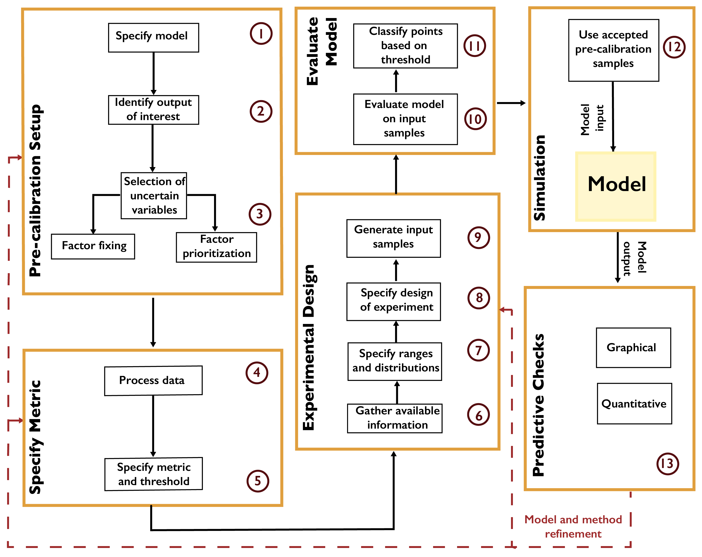

Pre-Calibration
Pre-Calibration¶
Pre-calibration [18, 161, 162] involves the identification of a plausible set of parameters using some prespecified screening criterion, such as the distance from the model results to the observations (based on an appropriate metric for the desired matching features, such as root-mean-squared error). A typical workflow is shown in Fig. A.3. Parameter values are obtained by systematically sampling the input space (see Chapter 3.3). After the model is evaluated at the samples, only those passing the distance criterion are retained. This selects a subset of the parameter space as “plausible” based on the screening criterion, though there is no assignment of probabilities within this plausible region.
{kind=link}

Workflow for pre-calibration.¶
Pre-calibration can be useful for models which are inexpensive enough that a reasonable number of samples can be used to represent the parameter space, but which are too expensive to facilitate full uncertainty quantification. High-dimensional parameter spaces, which can be problematic for the uncertainty quantification methods below, may also be explored using pre-calibration. One key prerequisite to using this method is the ability to place a meaningful distance metric on the output space.
However, pre-calibration results in a very coarse characterization of uncertainty, especially when considering a large number of parameters, as more samples are needed to fully characterize the parameter space. Due to the inability to evaluate the relative probability of regions of the parameter space beyond the binary plausible-and-implausible characterization, pre-calibration can also result in degraded hindcast and projection skills and parameter estimates [157, 163, 164].
A related method, widely used in hydrological studies, is generalized likelihood uncertainty estimation, or GLUE [18]. Unlike pre-calibration, the underlying argument for GLUE relies on the concept of equifinality [165], which posits that it is impossible to find a uniquely well-performing parameter vector for models of abstract environmental systems [165, 166]. In other words, there exist multiple parameter vectors which perform equally or similarly well. As with pre-calibration, GLUE uses a goodness-of-fit measure (though this is called a “likelihood” in the GLUE literature, as opposed to a statistical likelihood function [167]) to evaluate samples. After setting a threshold of acceptable performance with respect to that measure, samples are evaluated and classified into “behavioral” or “non-behavioral” according to the threshold.
Note
Put this into practice! Click the following badge to try out an interactive tutorial on utilizing Pre-Calibration and GLUE for HYMOD model calibration: Pre-Calibration Jupyter Notebook